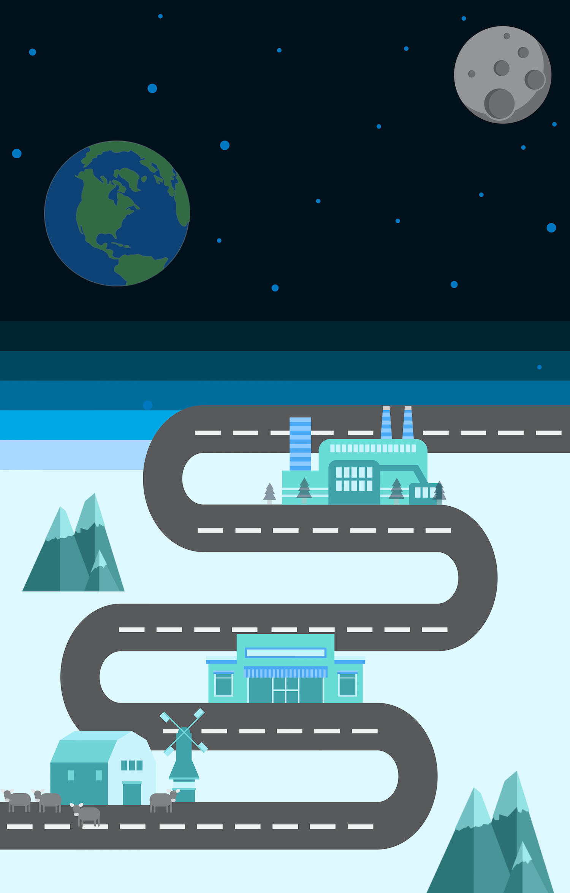
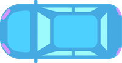

Notice how the opacity of the rocket increases as you scroll.
The rocket is then angled to pass through the moon.

This car appears from the right side of the webpage.
Although the car drives linearly, it is possible to use skrollr to have drive in other patterns.
The car can also rotate!
Note how the page also moves down as the car rotates and drives.
This is just the beginning, but with skrollr, the possibilities are endless.
I hope you enjoyed the tutorial! Thanks for watching!
